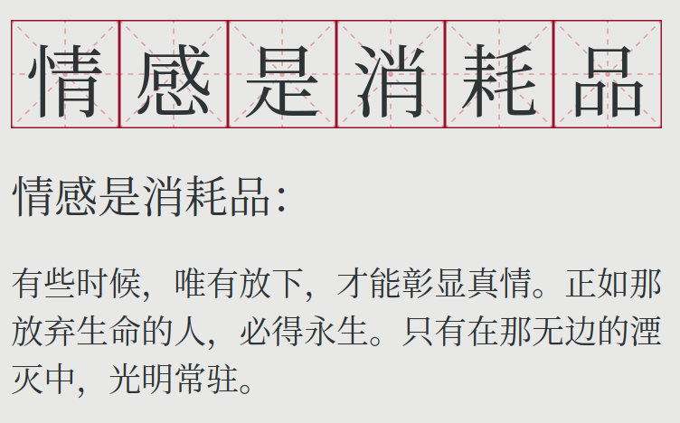

【理性鸡汤】情感是消耗品

因为年轻时的海誓山盟，我们往往将情感当成不生不灭的存在。仿佛至高无上的爱情可以救赎一切，扫除生命中所有的困惑和遗憾。
然而，正如世界上没有永动机，赋予爱情的期望越多，往往失望就越大。
在做情感咨询的这些日子里，总是有小姑娘哭哭啼啼地来问我：“叔叔，究竟怎么样才能留住他的心”。在听完他们的故事之后，我的内心往往会静默着叹息，不为别的，只为看到了年轻时的自己。
接着，我会告诉对方：这不是你们任何一方的错，因为错的是这个世界。当我在说这句话的时候，我是真心的。
然而，没有做错不代表不能做得更好。如果早一些知道一些简单的道理，就不会有各种不必要的两败俱伤，取而代之的是共赢和更好的自己。
在好的爱情的字典中，不该有刻骨铭心这一个词。
其中一个很简单却很有用的道理就是：意识到情感本质上是消耗品。
就像生命是消耗品一样，如果我们不给小花小草浇水施肥，给予足够的呵护，那么它们就会枯萎。
而情感也是这个样子，如果不主动维护，那么就会逐渐消逝。
这也是这个世界精彩却又无奈的一面：任何有价值的事物，就像一个个生命系统一样，都需要主动的维护。不加干预的放任，往往走向的是毁灭。
这也是为什么往往有付出才有收获是常态，祸从天降也是常态，甚至好人没好报也是常态。而最反常的，则是没有付出却依然有回报。
| 有付出 | 无付出 | |
|---|---|---|
| 有收获 | 正常 | 反常 |
| 无收获 | 也有可能 | 正常 |
这一现象无处不在，以至于成了我们最为基本的直觉。人死不能复生，破镜无法重圆。不用心维护的感情，终将消散在天际。
或许这就是人生。
很多人没有意识到情感是消耗品的这一特质，在一开始就拼命地去喜欢一个人，不懂得有节制的付出。到最后遍体鳞伤，内心逐渐变得麻木。这何尝不是一种讽刺:越敞开心扉去喜欢一个人，那么则伤得越重，并最终因此将自己保护地越深，就像一只受到惊吓的刺猬。
然而，这一切本来都完全可以避免:如果意识到自己的情感是消耗品，那么则会有节制地付出自己的情感，并且有意识地保护自己的感受。因为有节制，反而可以做到长久且稳定的情感输出。
有些年轻人觉得，维护情感就是简单的付出。然而这却只是飞蛾扑火。不理智的付出，相当于将最脆弱的内心世界，暴露在丛林中。这个险恶的世界，注定了危机四伏。我们要面对的不仅仅是现实的无奈，更还有内心的恶魔。
一方面，人们会发现，他们一味的付出换来的大概率是对方的铁拳。这一铁拳有着很多名字：
- “得不到的永远在骚动，被偏爱的有恃无恐”
- “升米恩，斗米仇”
不论是什么样的描述，它们都有的一个共性通俗来说就是“犯贱”，而这，只是我们品性中的众多局限性之一。
另一方面，自己的真心不一定会打动自己，却有可能放出内心的恶魔，反噬自身。
人们往往陷入一个奇怪的境地：消磨情感的主力，实际上是自己的内心。有多少情感，其实不是被对方，也不是被现实，而是被自己的内心压垮。
笔者的两个朋友，因为太喜欢对方，反而给自己过多的心理压力。也就是说，两个人互相喜欢互相在乎，结果反而会导致双方的心理压力过大。而心理压力过大则会导致心累，逐渐有意无意地消磨彼此之间的情感。在这种情况下，没有任何一方是错误的，反而都因为动机太好太纯粹，导致了事与愿违。
举个例子，很多人因为太过于在意对方而感到压力大。而这一压力是会累积的，逐渐地，累积的压力导致了广义上的焦虑。这一焦虑导致了自己的烦躁，而亲密关系中的对方作为最可以倾诉的人，自然而然成了出气筒。这就是为什么我们会看到很多人因为太在意彼此的感受，所以会经常地吵架。正如那句话所说的:
我们总是将最暴躁的一面留给最亲的人
开源 + 节流
至于如何维护感情，说来却也不复杂：无非就是冰冷理智的“开源+节流”。
节流，为的是像保温杯一样，让情感的热度在时间的长河中无损。而开源，为的是让情感的热度随着时间的流逝，可以不降反升。
无数的情感鸡汤所提到的建议，无非也就是这两个原则的实践。譬如：
- “三观和精神上的契合”：通过精神上的契合让双方在相处过程中，有着尽量少的磨损。用我们常用的话来说就是“心不累”。
- “营造新鲜感”：通过新鲜感让情感升温，让亲密度始终维持在高位。
在接下来的两篇文章中，我们枚举一些开源和节流的具体操作。
有些时候，唯有放下，才能彰显真情。正如那放弃生命的人，必得永生。只有在那无边的湮灭中，光明常驻。